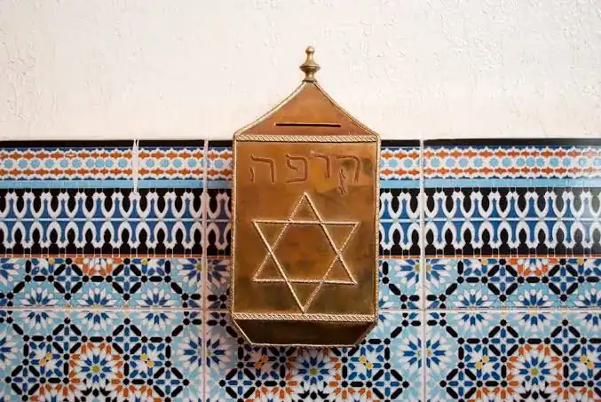
Morocco Jewish Heritage Tour from Casablanca
Eight days in the footsteps of Morocco’s Jewish communities: the museum of Casablanca, the mellahs and synagogues of Fes and Marrakech, and the old Atlantic port of Essaouira.
For more than two thousand years, Jewish communities have been part of the life of Morocco, in its imperial cities, its trading ports and its mountain villages. This private journey follows their story through the mellahs, synagogues and cemeteries that still bear witness to it, alongside the great sights of the country.
It begins in Casablanca, home to the Museum of Moroccan Judaism, then crosses Rabat and Meknes to Fes, where the Mellah beside the royal palace is one of the oldest in the country. A full day with a local guide brings together the medina, the restored synagogues and the cemetery of Fes, the city where Maimonides once lived and studied.
In Marrakech, a guided day explores the Mellah founded in the sixteenth century, its synagogues and the great Jewish cemetery, along with the palaces and souks of the medina. Then the road leads to Essaouira, the old port of the sultans, where Jewish merchants played a central role and where the memory of the community is kept alive today.
Two nights by the Atlantic give time for a guided visit of the Mellah of Essaouira and for free time along the sea walls, before the drive back to Casablanca. Visits to synagogues and heritage sites depend on their opening times, and the rhythm of the trip can be adapted on request.
- Museum of Moroccan Judaism
- Mellahs of Rabat & Meknes
- Fes Mellah & Ibn Danan synagogue
- Marrakech Mellah & Lazama synagogue
- Miâara cemetery
- Essaouira & Bayt Dakira
- Hassan II Mosque
- Day 1 · Welcome to Casablanca
Welcome at your accommodation, the airport or the port. Depending on your arrival time, a first look at the city: the Hassan II Mosque on the ocean, the Corniche and, as opening times allow, the Museum of Moroccan Judaism in the Oasis district, the only museum of its kind in the Arab world, and one of the city’s synagogues such as Temple Beth-El. Night in a hotel in Casablanca.
- Day 2 · Casablanca to Fes via Rabat and Meknes
North along the coast to Rabat, the capital: the Hassan Tower, the Mausoleum of Mohammed V, the Kasbah of the Udayas and the old medina, with its former Mellah. On to Meknes, the imperial city of Moulay Ismail, its monumental gate Bab Mansour and the lanes of its own Mellah. Arrival in Fes in the evening. Night in a hotel or riad.
- Day 3 · Fes: the Mellah and the medina
A full day with a local guide. In Fes el-Jdid, the Mellah beside the royal palace, with its houses and wooden balconies, the restored Ibn Danan synagogue, the Slat al-Fassiyine synagogue and the white-domed Jewish cemetery, as access allows. Then Fes el-Bali, the medieval medina: its gates, madrasas, souks and craftsmen, and the city where the philosopher Maimonides lived and studied in the twelfth century. Night in Fes.
- Day 4 · Fes to Marrakech
A long and scenic drive south. Through the Middle Atlas and Ifrane, then down along the foothills to Beni Mellal and across the plains to Marrakech, with stops for photos and coffee along the way. Arrival in the red city in the late afternoon or evening. Night in a hotel or riad.
- Day 5 · Marrakech: the Mellah and the medina
A full day with a local guide. The Mellah founded in the sixteenth century beside the Kasbah, its spice market, the Lazama synagogue and the Miâara cemetery, the largest Jewish cemetery in Morocco, as access allows. Then the Bahia Palace, the Koutoubia mosque from the outside, the souks and the Jemaa el-Fna square. Free time in the afternoon. Night in Marrakech.
- Day 6 · Marrakech to Essaouira
West across the plains and the argan country to the Atlantic. Arrival in Essaouira, the old port built by the sultan in the eighteenth century, where Jewish merchants once handled much of the trade with Europe. Time to explore the medina, the sea walls and the fishing port. Night in a hotel or riad.
- Day 7 · Essaouira with a local guide
A guided morning in the Mellah of Essaouira: the Slat Lkahal and Rabbi Haim Pinto synagogues, the old cemetery by the sea and Bayt Dakira, the House of Memory dedicated to the Jewish heritage of the city, as opening times allow. Free afternoon to walk along the ramparts, browse the craft shops or simply enjoy the sea. Night in Essaouira.
- Day 8 · Essaouira to Casablanca
After breakfast, the drive north back to Casablanca, with stops for coffee and photos. Depending on your departure time, direct transfer to the airport or the port, or a last short visit in Casablanca before drop-off at your accommodation.
- Pick-up and drop-off at your accommodation, the airport or the port in Casablanca
- Private modern vehicle with air conditioning, fuel included
- Experienced driver-guide speaking English or Spanish
- Local guide in Fes (full day)
- Local guide in Marrakech (full day)
- Local guide in Essaouira
- 7 nights in a private room at hotels or riads (Casablanca, Fes ×2, Marrakech ×2, Essaouira ×2)
- Breakfast every day
- Drinks
- Lunches
- Dinners
- Entrance fees, synagogue and museum donations or fees where applicable
- Tips (optional)
- Personal expenses
Moments from the road
Scroll through some of the places and moments you will live on this journey.
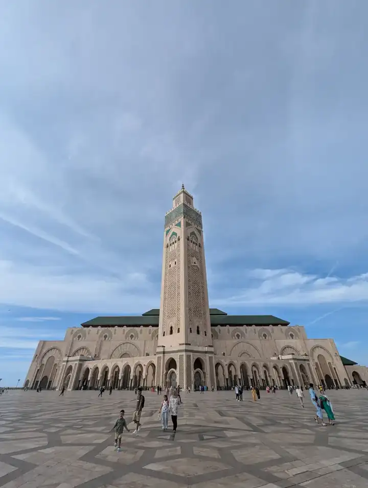
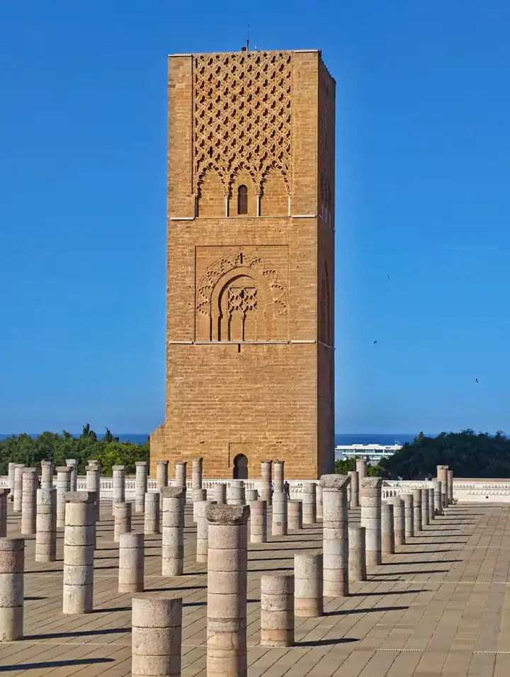
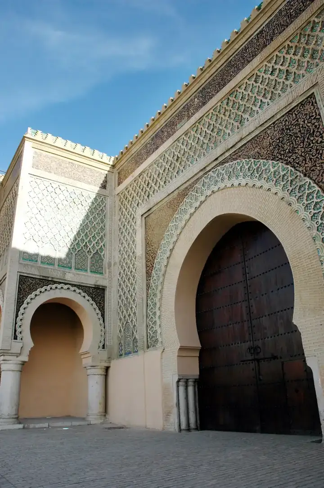
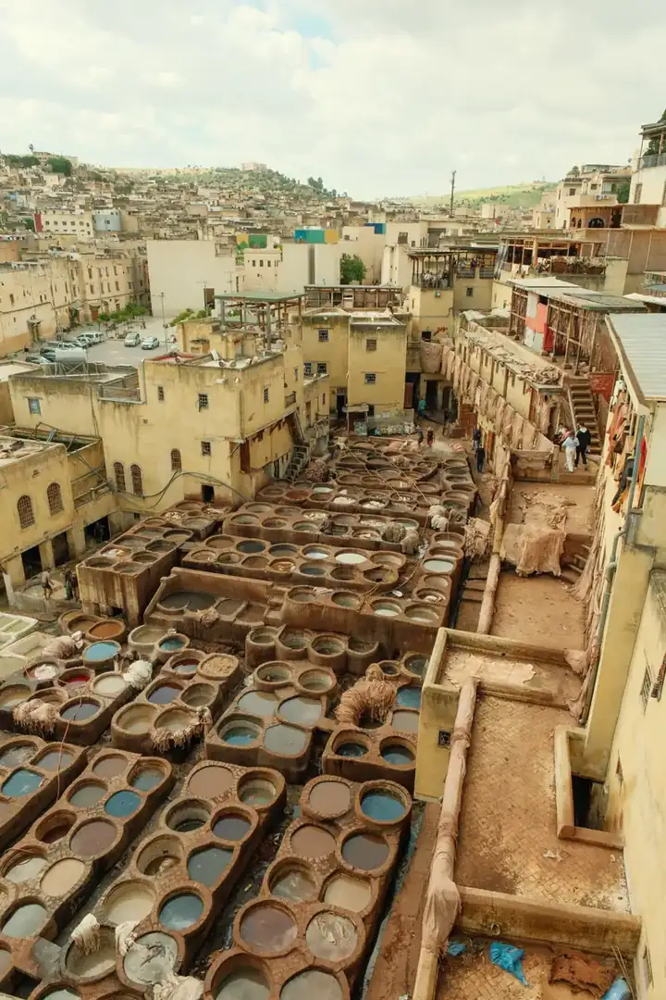
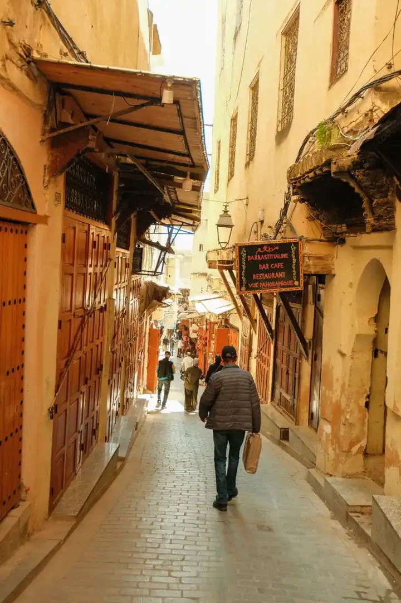
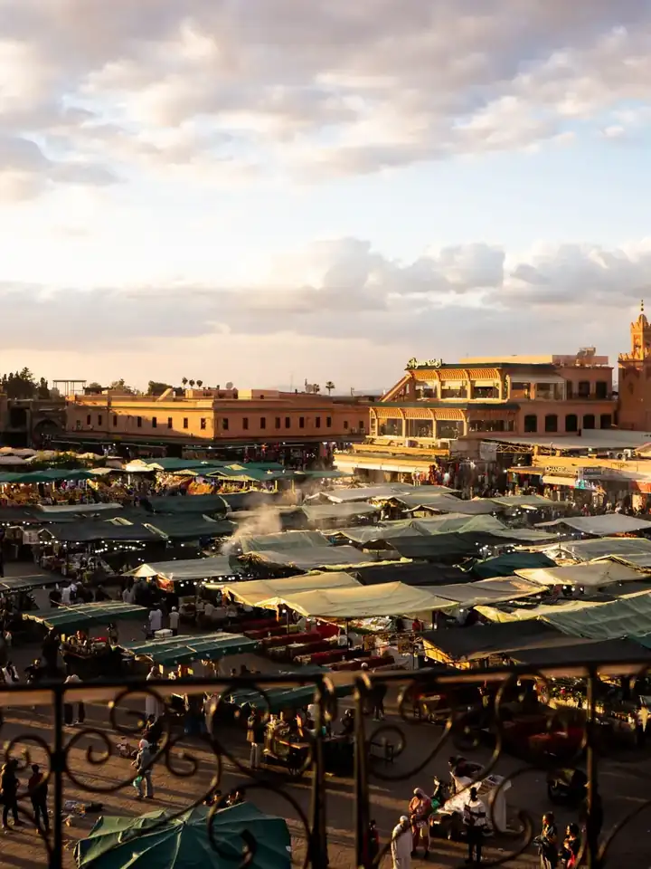
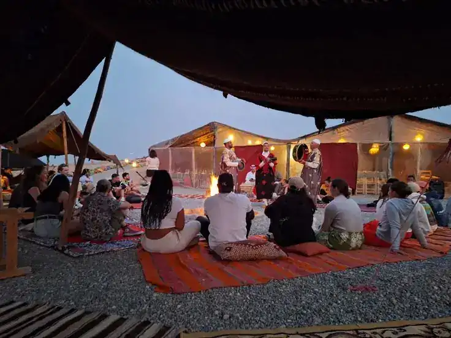
Your journey on the map
Casablanca · Rabat · Meknes · Fes · Ifrane · Beni Mellal · Marrakech · Essaouira · Casablanca. Every stop of the journey, at a glance.
- 1CasablancaStart & finish
- 2RabatCapital · old Mellah
- 3MeknesImperial city
- 4FesMellah · 2 nights
- 5IfraneAlpine town
- 6Beni MellalAtlas foothills
- 7MarrakechMellah · 2 nights
- 8EssaouiraMellah · 2 nights
Popular Destinations
Other private journeys our travellers love.
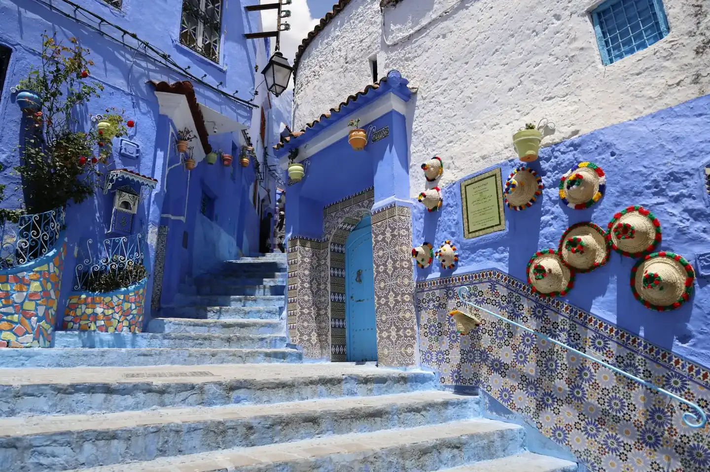
7 daysMorocco Student Group Tour from TangierTangier · Chefchaouen · Volubilis · Meknes · Fes · Ifrane · Midelt · Merzouga · Todra · Dades · Ait Ben Haddou · MarrakechView tour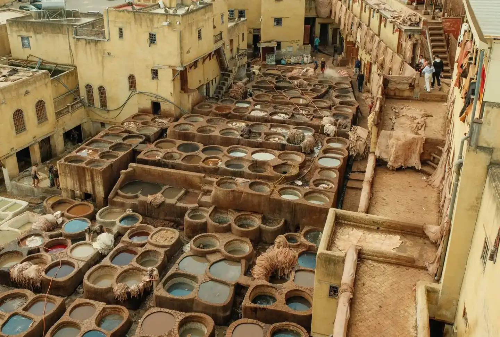
7 daysMorocco Photography Desert Tour from FesFes · Chefchaouen · Volubilis · Meknes · Ifrane · Midelt · Merzouga · Rissani · Todra · Dades · Ait Ben Haddou · MarrakechView tour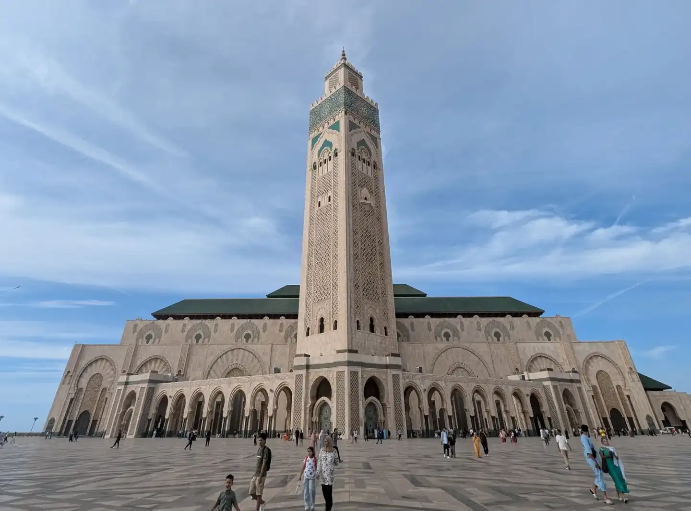
8 days8 Days Imperial Cities and Desert Tour from CasablancaCasablanca · Rabat · Chefchaouen · Meknes · Fes · Merzouga · Dades · Ait Ben Haddou · MarrakechView tour